Short Talks #3 x LAIFF
La terza edizione di Short Talks è la serata conclusiva di Luoghi dell'Anima – Italian Film Festival, domenica 14 dicembre 2025 al C'entro Supercinema di Santarcangelo.
Programma
In apertura
Introduce Steve Della Casa, direttore artistico del festival.
-
Mario Martone e Ippolita Di Majo Dialogo con il regista e la sceneggiatrice di Fuori
I corti
Conduce Francesco Pasquinelli.
-
Il Posto Vuoto Giuseppe Fonti · Commedia drammatica · 15'
-
La Partenza Alessio Petrillo · CDL e Arkadia Studios · Realismo magico · 5'
-
Julián Umberto Baldacci · Coming-of-age · 20'
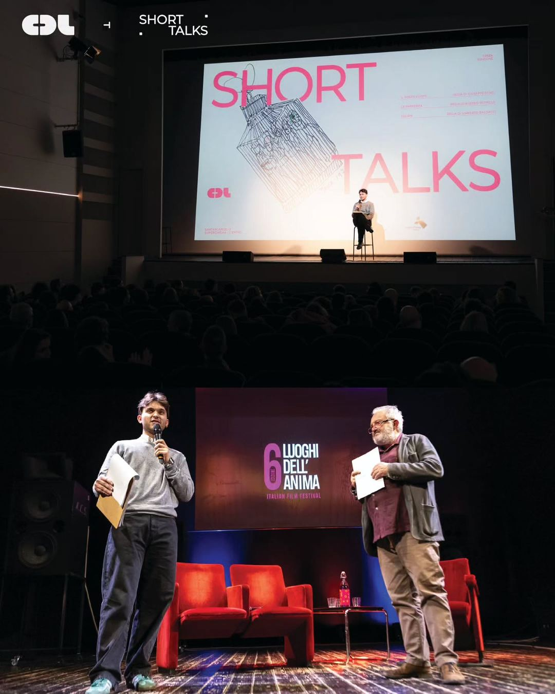
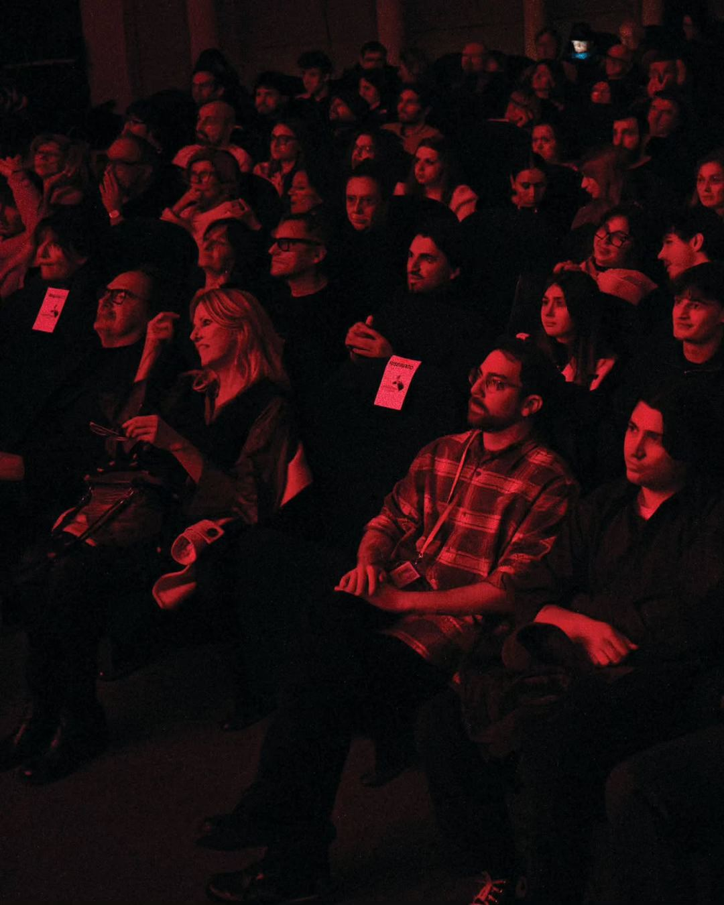
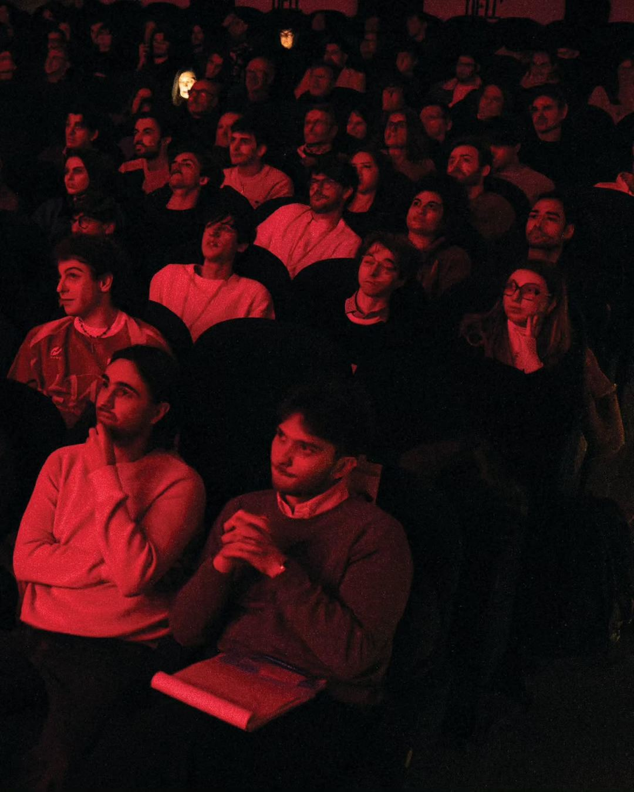
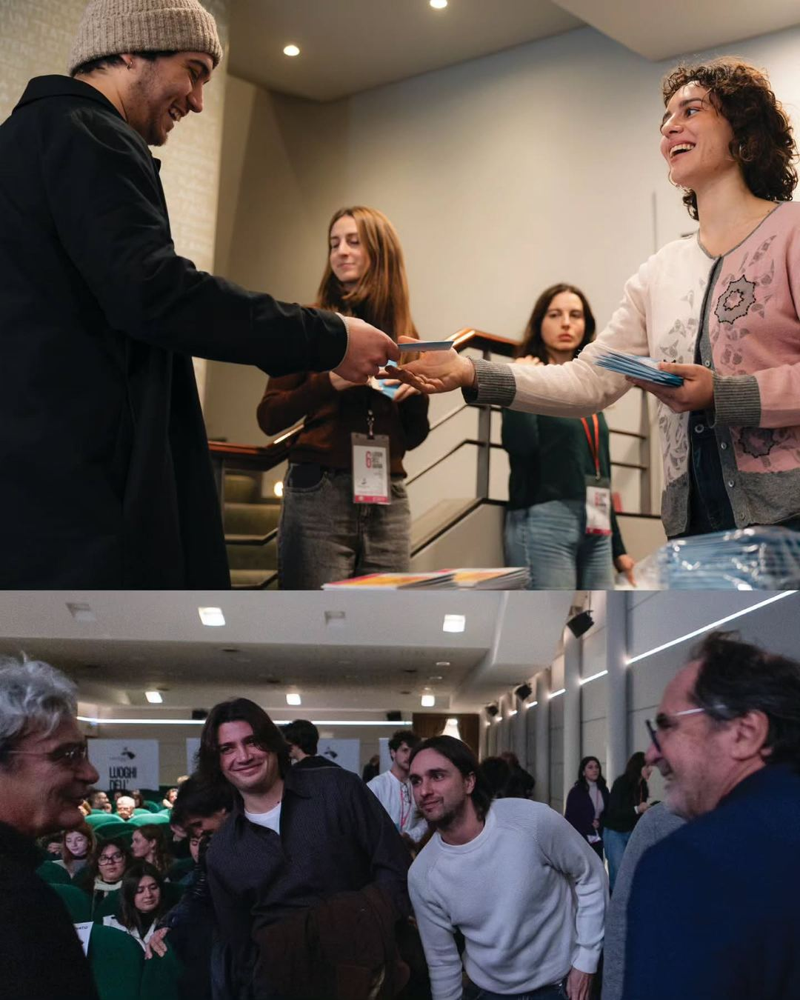
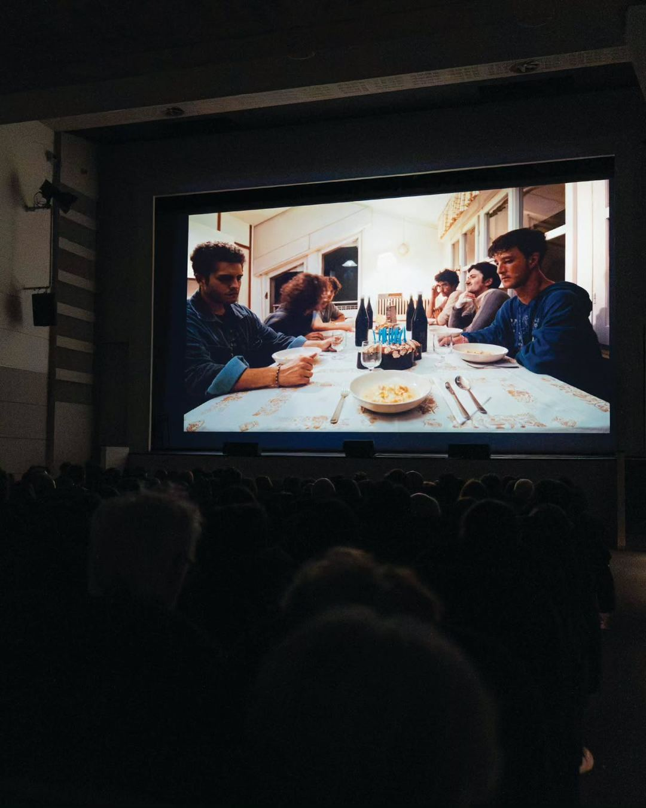
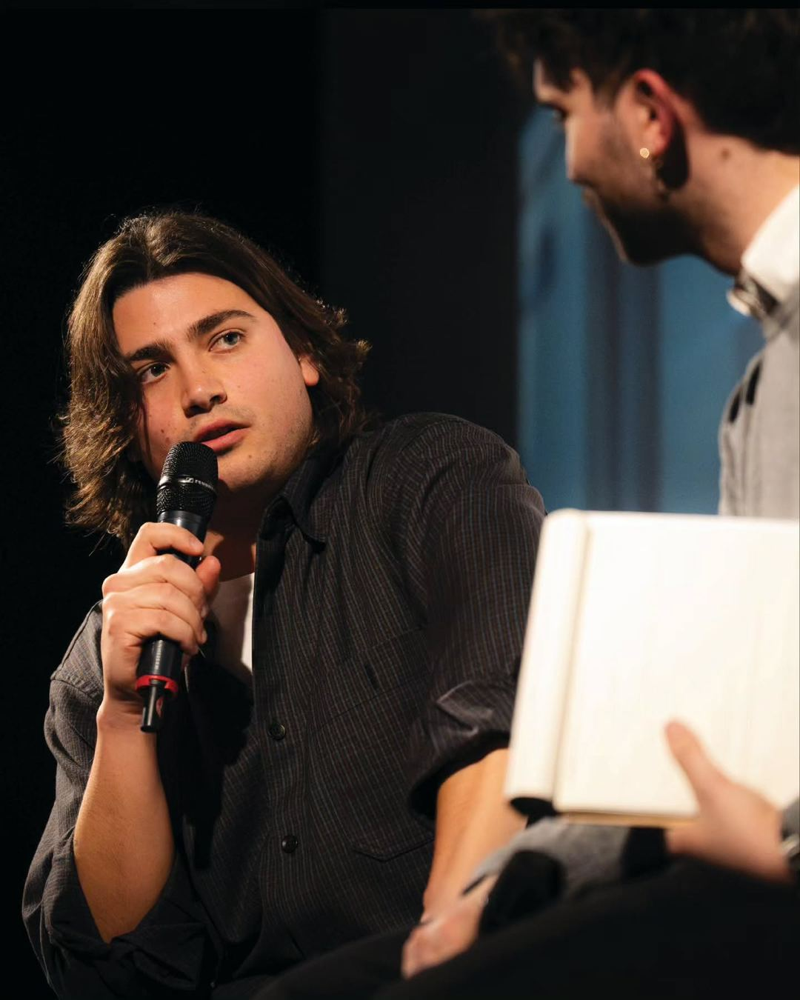
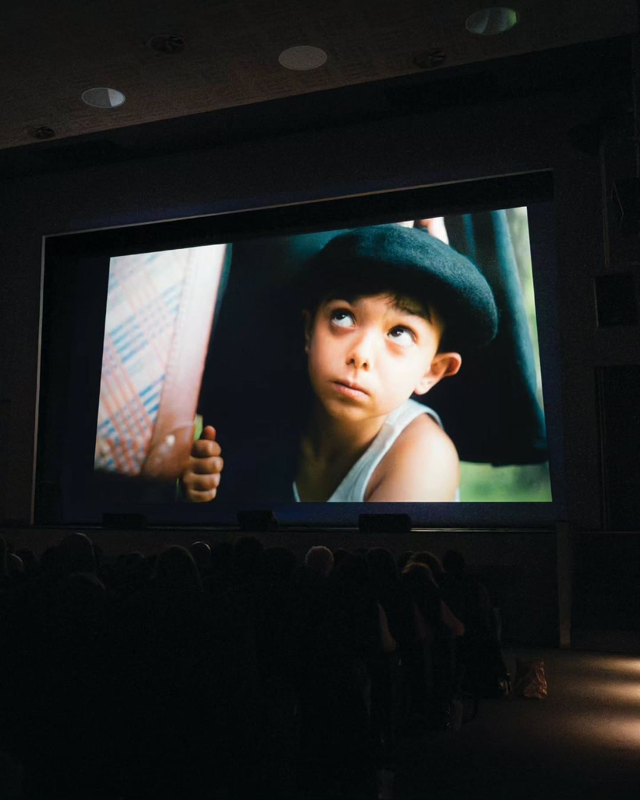
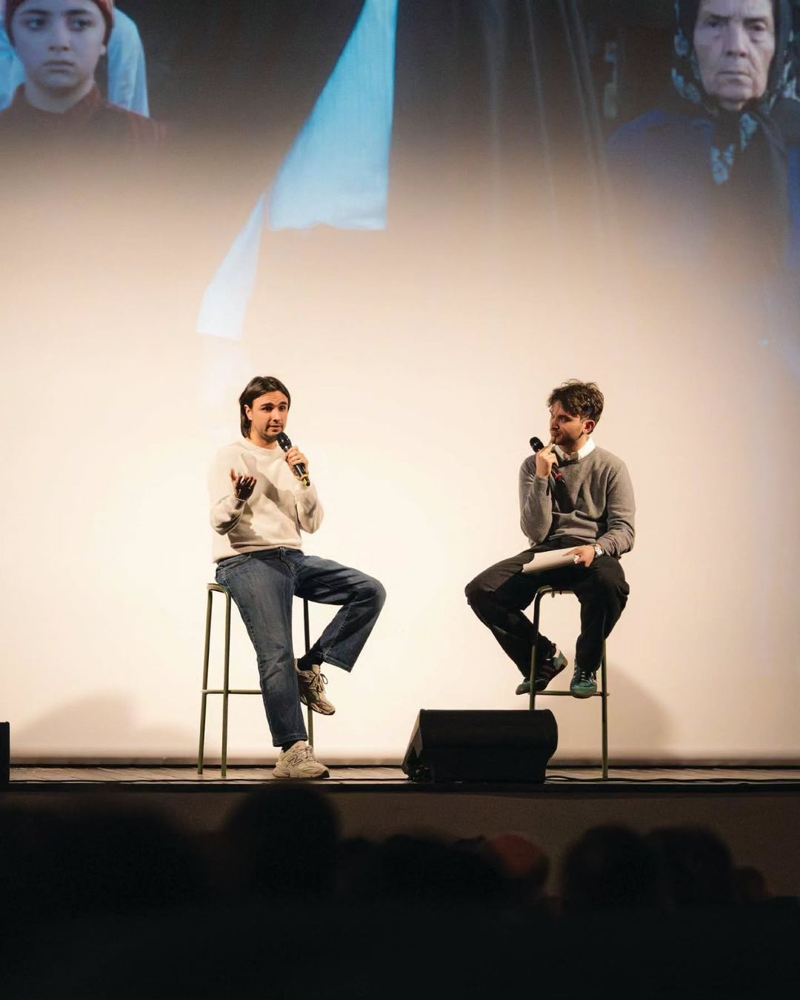
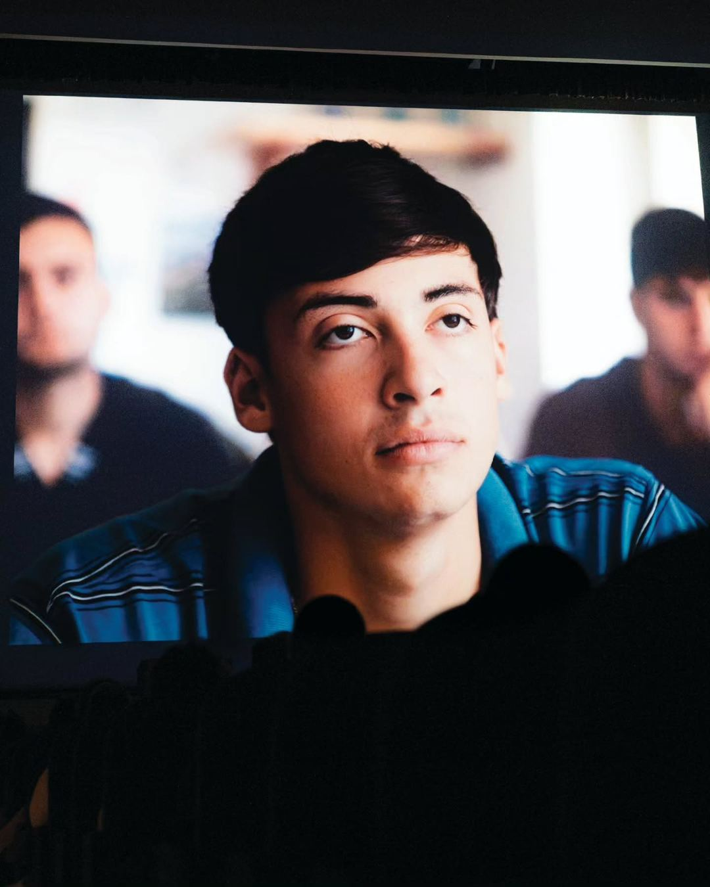
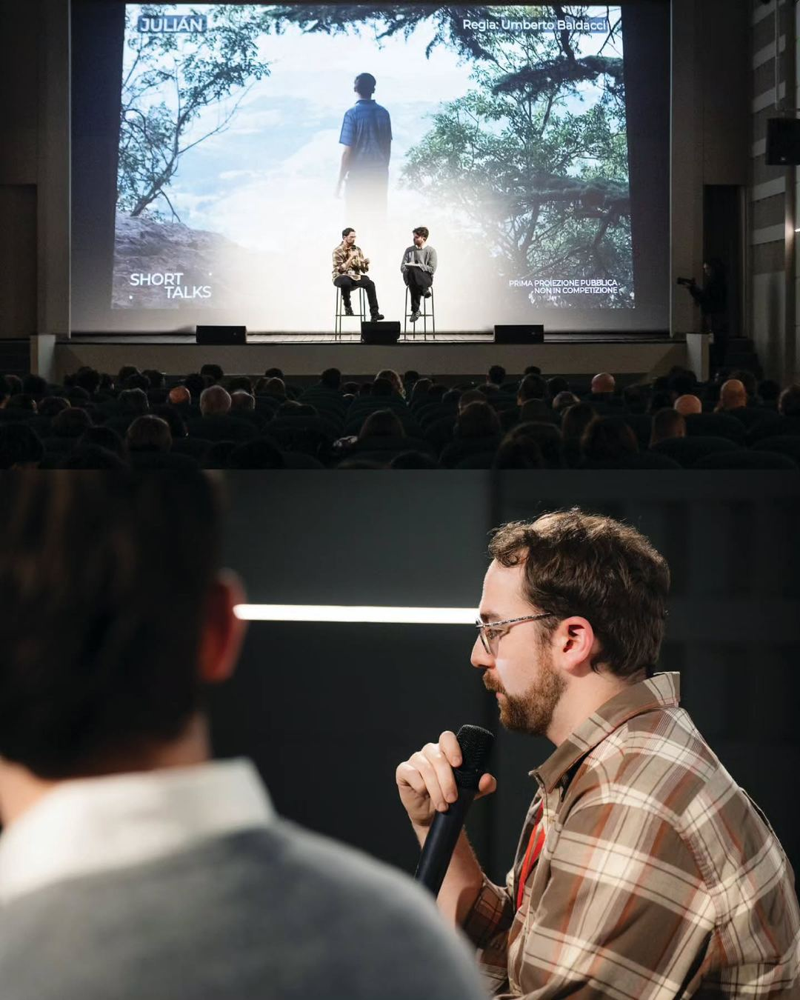
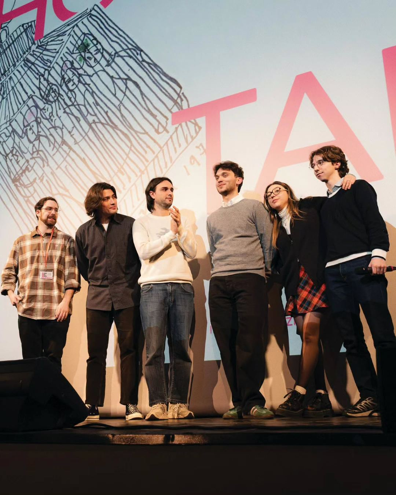
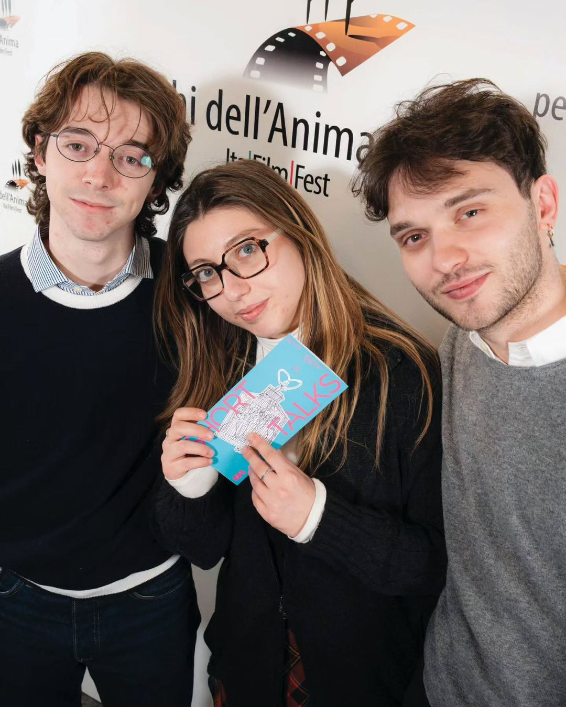